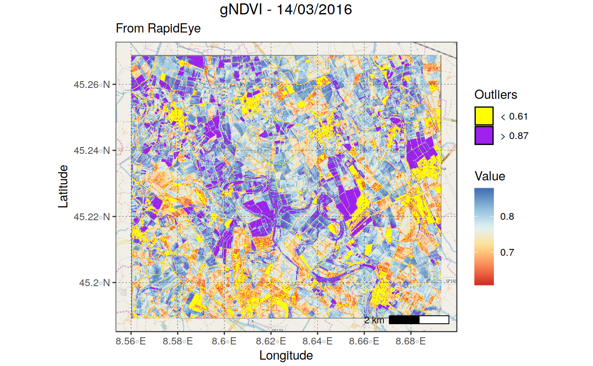

plot_rast_gg
FUNCTION_DESCRIPTION
plot_rast_gg(in_rast, band_names = NULL, bands_to_plot = NULL, nrows = NULL, xlims = NULL, ylims = NULL, basemap = NULL, zoomin = -1, scalebar = TRUE, scalebar_dist = NULL, transparency = 0, na.color = "transparent", na.value = NA, palette_type = "gradient", palette = NULL, labels = NULL, no_labels = TRUE, title = NULL, subtitle = NULL)
Arguments
| in_rast | PARAM_DESCRIPTION |
|---|---|
| band_names | PARAM_DESCRIPTION |
| bands_to_plot | PARAM_DESCRIPTION |
| xlims | PARAM_DESCRIPTION, Default: NULL |
| ylims | PARAM_DESCRIPTION, Default: NULL |
| basemap | PARAM_DESCRIPTION, Default: NULL |
| zoomin | PARAM_DESCRIPTION, Default: -1 |
| scalebar | PARAM_DESCRIPTION, Default: TRUE |
| scalebar_dist | PARAM_DESCRIPTION, Default: NULL |
| na.color | PARAM_DESCRIPTION, Default: 'transparent' |
| na.value | PARAM_DESCRIPTION, Default: NA |
| palette_type | PARAM_DESCRIPTION, Default: 'gradient' |
| palette | PARAM_DESCRIPTION, Default: NULL |
| labels | PARAM_DESCRIPTION, Default: NULL |
| no_labels | PARAM_DESCRIPTION, Default: TRUE |
| title | PARAM_DESCRIPTION, Default: NULL |
| subtitle | PARAM_DESCRIPTION, Default: NULL |
Value
OUTPUT_DESCRIPTION
Details
DETAILS
Examples
in_rast <- raster::stack(system.file("extdata/OLI_test", "oli_multi_1000_b2.tif", package = "sprawl.data")) plot_rast_gg(in_rast, basemap = "osm", palette_type = "diverging", no_labels = T, na.value = 0, zoomin = 0, title = "OLI", subtitle = "Band 2")#>#>#>#>plot_rast_gg(in_rast, basemap = "stamenbw", palette_type = "diverging", no_labels = F, na.value = 0, transparency = 0.2, zoomin = 0, title = "OLI - 15/06/2017", subtitle = "Band 2 - Green")#>#>#>#>in_rast <- system.file("extdata/REYE_test", "REYE_2016_185_gNDVI.tif", package = "sprawl.data") plot_rast_gg(in_rast, basemap = "cartolight", palette_type = "diverging", no_labels = F, zoomin = -1, na.value = 0, transparency = 0.5, title = "gNDVI - 14/03/2016", subtitle = "From RapidEye")#>#>#>#>